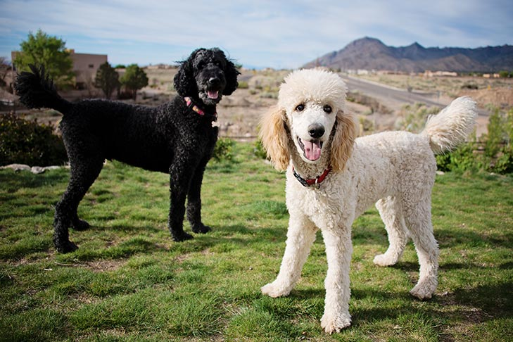
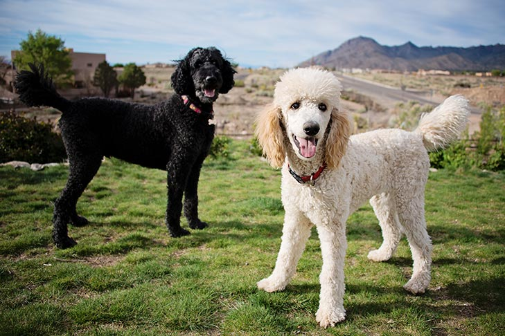
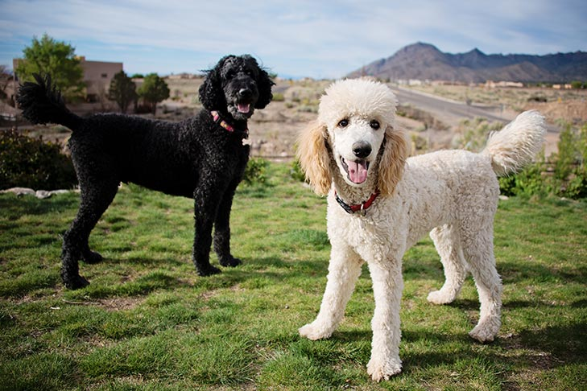
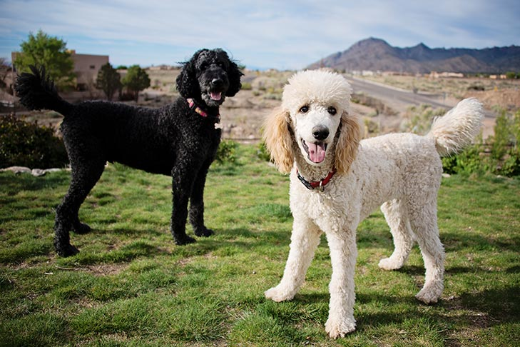

Golden Retrievers are friendly, intelligent, and versatile dogs,
making them excellent family companions.
They are known for
their loyalty, eagerness to please, and adaptability, excelling
in roles such as therapy,
search-and-rescue,and hunting. Their
gentle demeanor and love for play make them ideal for families
with children.

Beaglesare cheerful and curious hounds, known for their excellent
scenting ability. Their friendly temperament makes them great companions
for families, and their love for exploration suits active lifestyles.
Beagles are also popular for their distinctive howl and expressive eyes.
German Shepherds are known for their loyalty, courage, and intelligence. Often used in police, military, and search-and-rescue work, they are also protective family pets. These dogs are highly trainable and thrive when given tasks or challenges, making them ideal for experienced dog owners.

French Bulldog are small, muscular dogs with a playful and affectionate personality. They are well-suited for apartment living due to their low exercise needs and adaptable nature. Frenchies are known for their charming appearance, complete with bat-like ears and a compact build.